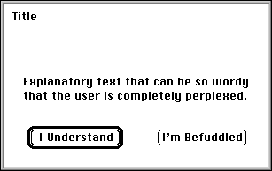

FindMsgPort() call. The following code segment returns the item number of Access's message port:
FindMsgPort("access");CreateItem() call. For a list of the tag argument data types, see Managing Items. Each tag argument has two fields: the tag and the argument value. You need only provide tag arguments for the attributes you wish to specify; all nonspecified attributes are set to default values. Two tag arguments are mandatory: ACCTAG_REQUEST and ACCTAG_SCREEN. The final tag argument in the list must be set to TAG_END to terminate the list.All Access tags and the constants used to set their argument values are found in the include file access.h.
ACCTAG_REQUEST, which can accept any one of the following arguments:
ACCREQ_LOAD displays a transaction box that asks the user to specify a file to be loaded. The transaction returns the pathname of a file to be loaded.
ACCREQ_SAVE displays a transaction box that asks the user to specify a file to save. The transaction returns the pathname of a file to save.
ACCREQ_DELETE displays a transaction box that asks the user to specify a file to delete. The transaction returns the pathname of a file to delete.
ACCREQ_OK displays a transaction box with text supplied by the calling task to inform the user of a fact. The transaction box contains a single OK button, which the user can click to continue. The transaction returns a 0.
ACCREQ_OKCANCEL displays a transaction box with text supplied by the calling task to inform the user of a proposed action. The transaction box contains two buttons, OK and Cancel, which the user can click on either to confirm the action or cancel it. The transaction returns a 0 for the OK button or a 1 for the Cancel button.
ACCREQ_ONEBUTTON displays a transaction box with text supplied by the calling task to inform the user. The transaction box has a single button with text also supplied by the calling task. The user can click on it to continue. The transaction returns a 0.
ACCREQ_TWOBUTTON displays a transaction box with text supplied by the calling task to inform the user. The transaction box has two buttons, each with text supplied by the calling task. The user can click on either button to choose between the two choices. The transaction returns a 0 for the left button or a 1 for the right button.
ACCREQ_TWOBUTTON, it must supply text for both of the buttons in the transaction box and background text to explain the context of the buttons.
ACCTAG_SCREEN, which takes the item number of the screen as its argument.
Note: Before you call Access, you must call ControlMem() so that Access can write to the screen's memory.

Figure 1: An Access transaction box.
To specify a title for the transaction box, a task uses the tag argument ACCTAG_TITLE, which takes as its argument a pointer to a NULL-terminated text string to be used as the title.
To specify text for the center of the transaction box, a task uses the tag argument ACCTAG_TEXT, which takes as its argument a pointer to a NULL-terminated text string to be used as explanatory text. Access automatically wraps text within the transaction box.
To specify text for the first button (the left button), a task uses the tag argument ACCTAG_BUTTON_ONE; to specify text for the second button (the right button), it uses the tag ACCTAG_BUTTON_TWO. Both tag arguments accept a pointer to a NULL-terminated text strings containing the text to be inserted in the button.
Keep in mind that if you supply too much text for a button or the title, you may overflow the display.
ACCTAG_SAVE_BACK with the argument 0.
Preserving the screen background requires a fair amount of memory. To be memory efficient, you can choose not to preserve the screen background by not sending the ACCTAG_SAVE_BACK tag argument at all.
ACCTAG_STRINGBUF, which takes a pointer to the beginning address of the string buffer as its argument. It must also supply the tag argument ACCTAG_STRINGBUF_SIZE, which takes the size in bytes of the string buffer as its argument.
Note: Before you call Access, you must call ControlMem() so that Access can write to the buffers.
ACCTAG_FG_PEN sets the foreground color.
ACCTAG_BG_PEN sets the background color.
ACCTAG_HILITE_PEN sets the highlight color.
ACCTAG_SHADOW_PEN sets the shadow color.
In the meantime, the task that requested the transaction should entering the wait state to wait for a reply message from Access. It can do so using the WaitPort() call. When Access is finished with the transaction, it sends a reply to the task's reply port, which wakes up the task. The task can then read the contents of Access's reply message.
msg_Result, which contains the results of the transaction. If an error occurs, it contains a negative value (an error code defined in access.h). If the transaction was successful, msg_Result contains a 0 or a 1. These values can be interpreted in different ways depending on the button content of the transaction box. If the box contains a single button, msg_Result contains 0 if the button was clicked. If the box contains a Cancel and an OK button, it contains 0 for OK and 1 for Cancel. If the box contains two task-labeled buttons, it contains 0 for the left button and 1 for the right button.